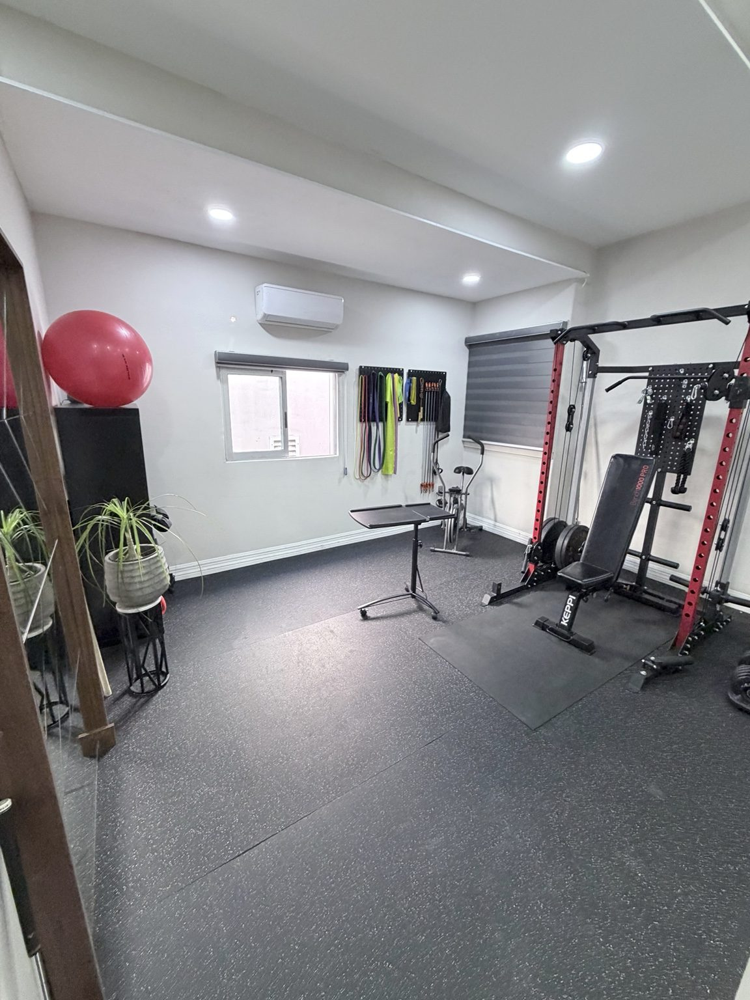
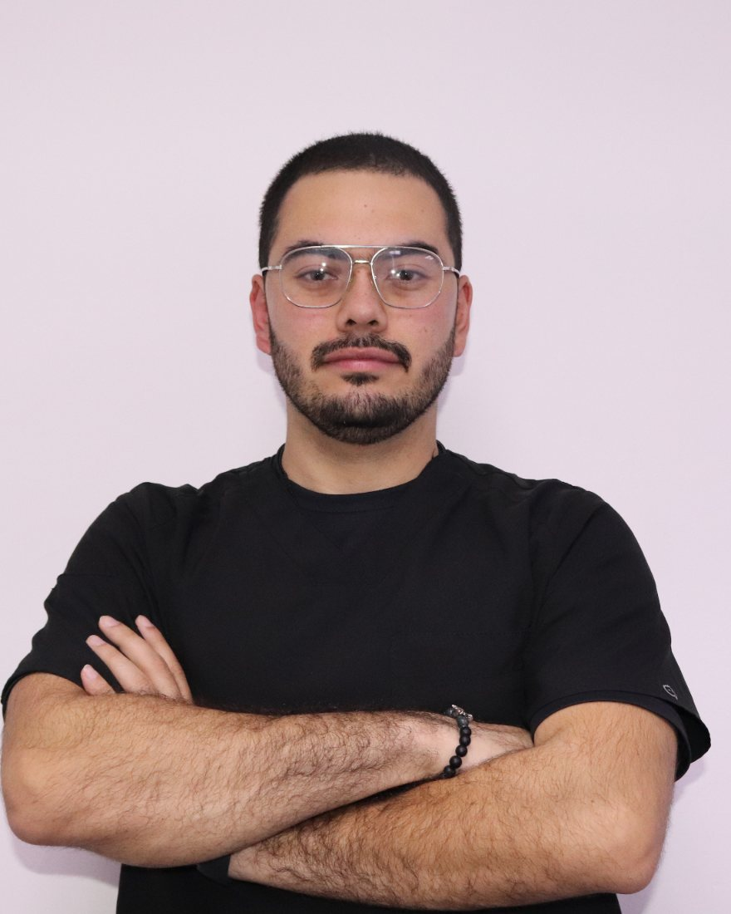
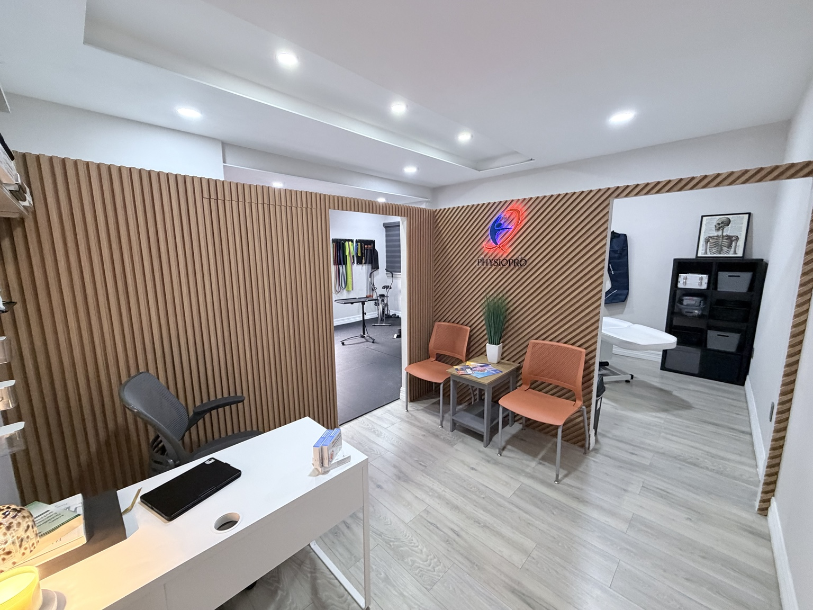
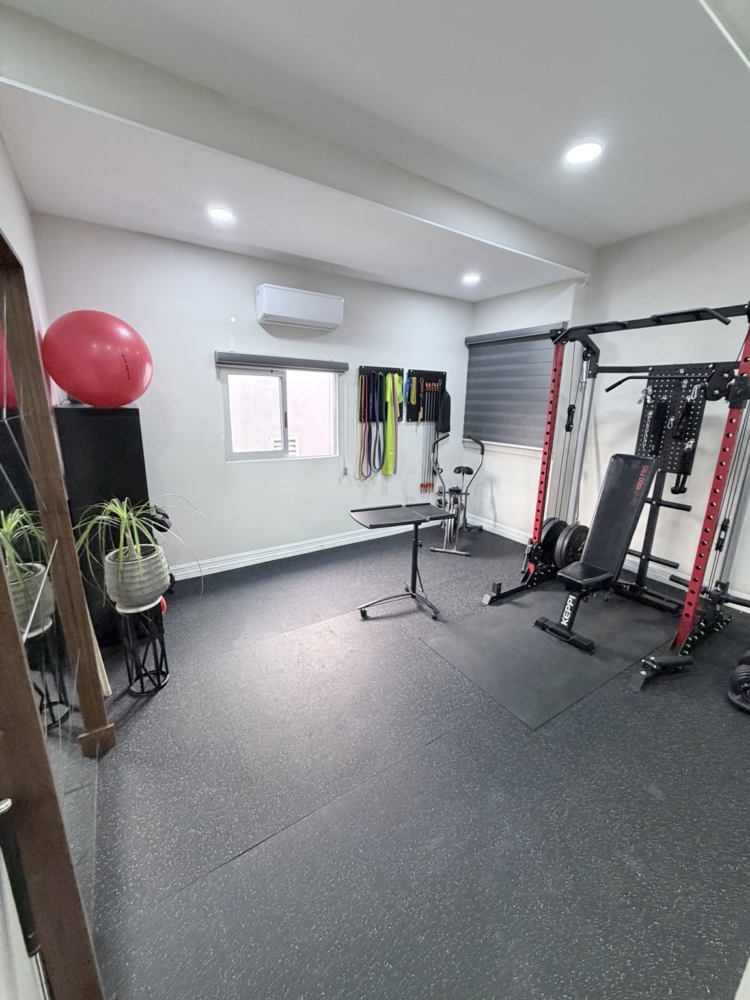
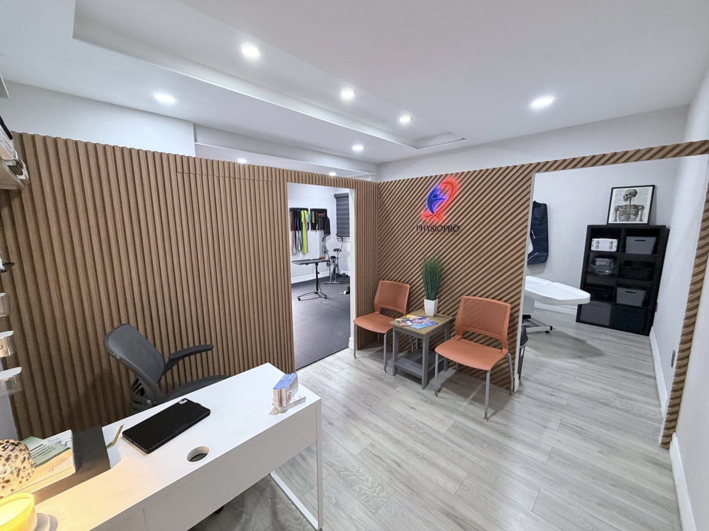
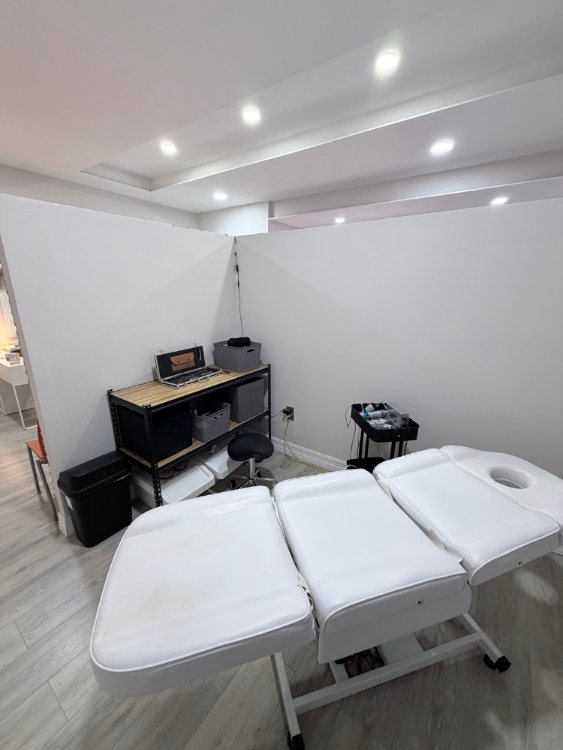

Evaluación
Tu movimiento, patrón de dolor e historial mapeados por completo. La primera sesión define la dirección.
 PhysioPro
Rehabilitación de Rendimiento · Tijuana
PhysioPro
Rehabilitación de Rendimiento · Tijuana
Rehabilitación de Rendimiento · Zona Río, Tijuana
PhysioPro es rehabilitación de rendimiento para quienes se han visto obligados a parar — y están listos para un regreso estructurado.
Leonardo Machado · Fisioterapeuta Licenciado · Rehabilitación Deportiva

Dinos qué quieres recuperar.

"Quitarte el dolor importa. El trabajo completo es regresarte a cargar, moverte y confiar en tu cuerpo otra vez."
Fisioterapeuta Licenciado · nombre de la institución pendiente de publicación · Rehabilitación Deportiva
PhysioPro está construido alrededor de una idea simple: la rehabilitación seria requiere una evaluación clara, progresión estructurada y suficiente criterio clínico para llevar al paciente más allá del alivio inicial de síntomas.
Agenda por WhatsApp1 · Del Dolor al Rendimiento
Tu movimiento, patrón de dolor e historial mapeados por completo. La primera sesión define la dirección.
Tratamiento enfocado en tu caso — no un protocolo genérico repetido para todos.
Carga estructurada, hitos medibles y el regreso de la confianza física.
De vuelta al entrenamiento, al trabajo y al deporte — a un nivel más alto que simplemente ya no doler.
La primera sesión incluye evaluación completa y tratamiento desde el primer día.
Agenda tu primera sesión →Competitivos o amateur — el objetivo es regresar al deporte, no solo la ausencia de dolor.
Personas que quieren mantenerse activas, entrenar y moverse sin que el dolor ponga el límite.
Entrenando con una lesión o buscando la causa raíz del problema que sigue regresando.
Jiu Jitsu, box, MMA — tolerancia a la carga, manejo de lesiones y protocolos de regreso.
Recuperación estructurada después de cirugía con un cronograma claro e hitos medibles.
Dolor crónico de cuello, espalda y hombro que se acumula por largas horas sentado.
LCA, menisco, rodilla de corredor, carga postoperatoria — evaluada y recargada progresivamente.
Manguito rotador, pinzamiento, inestabilidad — diagnóstico basado en movimiento y tratamiento dirigido.
Lumbar, disco, ciática — el movimiento es el tratamiento, no el reposo prolongado.
Dolor cervical, tensión, carga postural — se atienden las causas de fondo, no solo el síntoma.
Esguinces, desgarres, sobreuso, trauma agudo — de vuelta a la función completa y a tu carga de entrenamiento.
Recuperación estructurada después de cirugía ortopédica o deportiva con supervisión clínica en cada etapa.
Dentro de PhysioPro


¿Listo para ver cómo se ve la rehabilitación estructurada de verdad?
Agenda por WhatsApp4 · Por Qué PhysioPro
La primera sesión incluye evaluación clínica y tratamiento. Sin citas de solo llenar papeles. Sin sesiones perdidas en trámites.
Sin personal rotativo. Sin transferencias a asistentes. El mismo fisioterapeuta que te evaluó te trata hasta tu regreso.
Reducir el dolor es el inicio. El objetivo es cargar, entrenar y moverte a un nivel más alto que antes de la lesión.
No son sesiones abiertas sin rumbo. Es una progresión clara desde la evaluación hasta el regreso al deporte, con hitos medibles en cada etapa.
5 · Confianza
Atención dirigida por el fundador, en cada sesión.
Evaluación y tratamiento desde el primer día.
Sesiones 1:1. Sin personal rotativo, sin transferencias.
$750 MXN. Sin costos ocultos de consulta.

6 · Antes de Agendar
Sí. La primera sesión incluye evaluación clínica, tratamiento inicial y un plan claro de próximos pasos.
Eso puede ser parte de una fase, pero no debería ser automáticamente el final del proceso. La pregunta importante es cuándo y cómo regresar bien.
Sí. El enfoque cambia según el caso, pero la dirección es la misma: función, capacidad y confianza.
Depende de tu condición, historial y objetivo. Después de la primera sesión te damos un estimado honesto.
Algunos horarios pueden requerir un depósito para confirmar tu cita. El depósito se aplica a tu primera sesión.
No. La evaluación clínica es la herramienta diagnóstica principal. Si ya tienes estudios, tráelos — ayudan. Pero no son obligatorios, y esperar un estudio antes de empezar rara vez es necesario. La evaluación parte de lo que encontramos en persona, no de un reporte.
La razón más común: el tratamiento redujo el dolor sin reconstruir la capacidad del tejido. Cuando la carga regresó, el dolor regresó. Aquí el objetivo es restaurar lo que el tejido puede tolerar — no solo calmar el dolor temporalmente. La evaluación identifica el déficit. El tratamiento lo reconstruye.
Sí. La clínica está a minutos de la frontera. Las sesiones se realizan en inglés.
Efectivo y transferencia bancaria (SPEI). El pago se confirma al momento de agendar o el día de tu sesión. Los detalles específicos se te proporcionan al confirmar tu cita.
Jose Maria Velazco 2632, Zona Urbana Río Tijuana, 22010 Tijuana, B.C.
Lunes a Viernes · 8:00 AM – 8:00 PM
Primera sesión · $750 MXN incluye evaluación y tratamiento.
Fácil acceso desde San Diego — Zona Río está aproximadamente a 30 minutos de la frontera con Estados Unidos.

¿Prefieres que te contactemos? Déjanos tus datos.
Fisioterapia en Tijuana para rehabilitación deportiva, análisis de movimiento, dolor al correr, dolor de rodilla y espalda, recuperación postoperatoria y progresión de regreso al deporte.